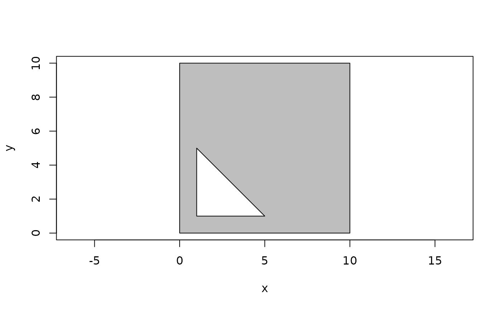
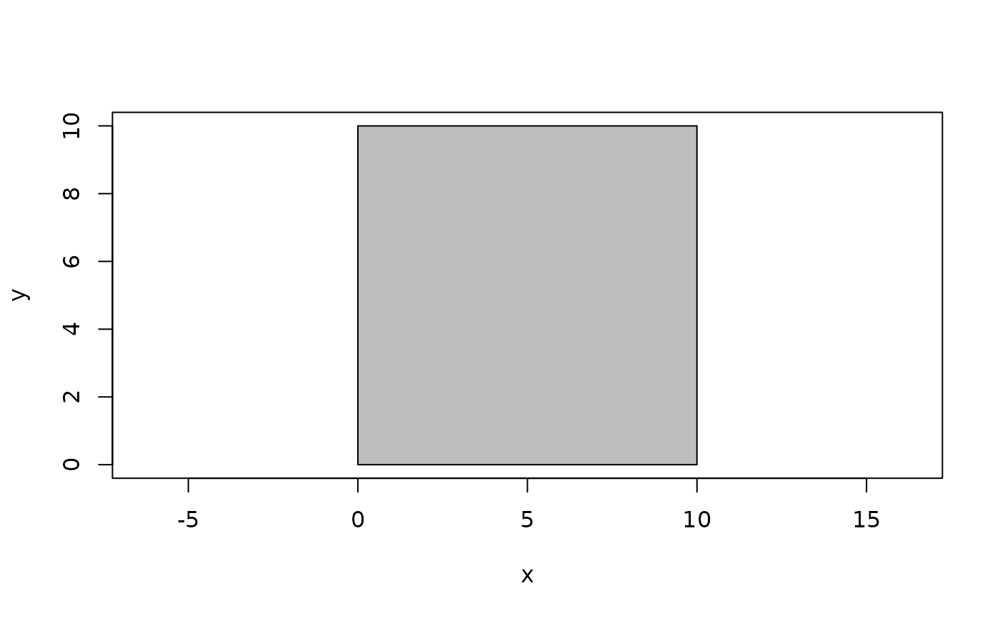
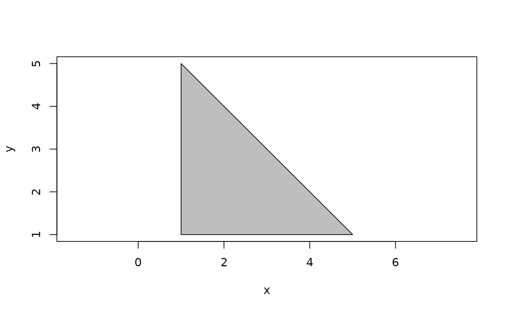
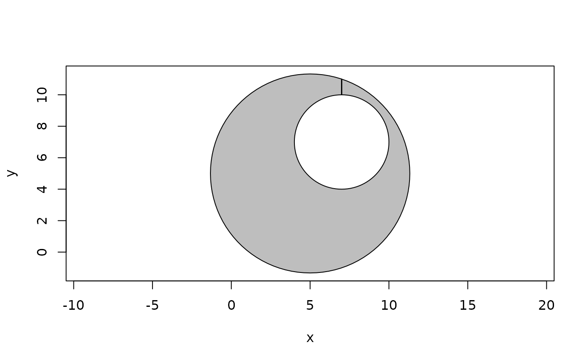

A polygon consists of 1 or more rings. The first ring denotes the outer
boundary of the polygon whereas any additional rings marks holes within that
boundary. If the outer boundary is empty (i.e. doesn't consist of any
vertices) the polygon is said to be unbounded. The different rings can be
extracted, modified, or, in the case of holes, added or removed. A special
function, connect_holes() exist to remove holes by connecting them with the
outer boundary, by tracing upwards from the top vertex in the hole until the
boundary is reached. Connecting holes will make any polygon invalid as the
part connecting the hole with the boundary will consist of two overlapping
edges.
n_holes(x)
is_unbounded(x)
boundary(x)
boundary(x) <- value
hole(x, which)
hole(x, which = NULL) <- value
connect_holes(x)polyclid_polygon vector
integer vector recycled to the length of x referencing the hole to get or set
A new polyclid_polygon vector or, in the case of n_holes() an
integer vector
poly <- polygon(
c(0, 10, 10, 0, 1, 5, 1),
c(0, 0, 10, 10, 1, 1, 5),
hole_id = c(1, 1, 1, 1, 2, 2, 2)
)
plot(poly, col = "grey")

n_holes(poly)
#> [1] 1
plot(boundary(poly), col = "grey")

plot(hole(poly, 1), col = "grey")

# Change the boundary
boundary(poly) <- euclid::circle(point(5, 5), 40)
plot(poly, col = "grey")
# Add a hole
hole(poly) <- euclid::circle(point(7, 7), 9)
plot(poly, col = "grey")
# Change a hole (by using a combination of hole and def setters)
def(hole(poly, 1), "x") <- def(hole(poly, 1), "x") + 2
plot(poly, col = "grey")
# Or remove it
hole(poly, 1) <- NULL
plot(poly, col = "grey")
# Holes can also be removed by connecting them to the boundary
poly <- connect_holes(poly)
plot(poly, col = "grey", force_valid = FALSE)
